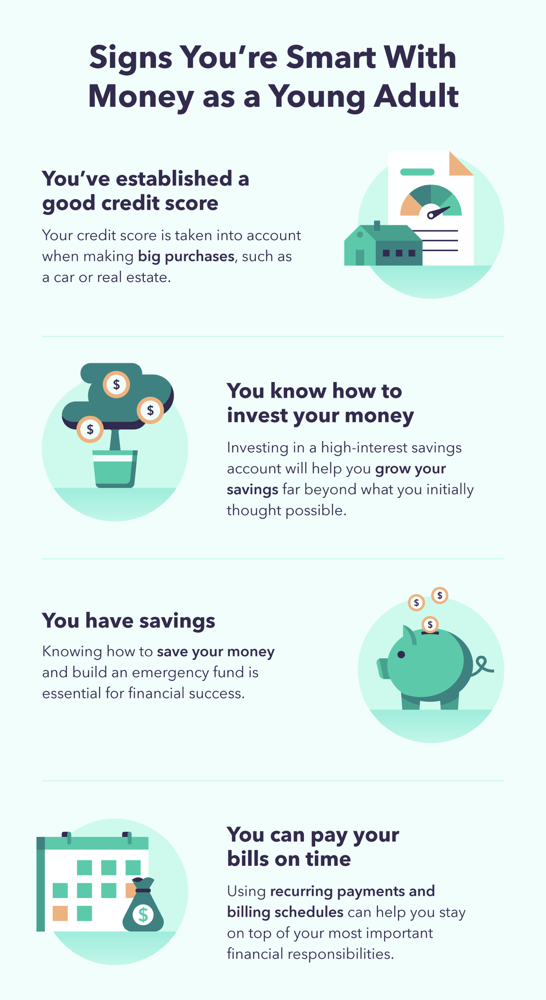

Home
Financial Advice For Young Adults
To start, see if any of these signs apply to you:

Photo from Intuit Mint Life (https://mint.intuit.com/blog/personal-finance/money-management-for-young-adults/)
Many youth lack the basic foundation for financial literacy.
Banking
- Understanding banking is essential for young adults. Having bank accounts and building up credit is important for a good financial future.
- Checking account, savings account, credit and credit score are key terms when it comes to banking
Investing
- Investing is dedicating some of your assets with the goal of extending your profits.
- The stock market, cryptocurrencies and NFTs are some important subjects to understand when learning about investing.
Budgeting
- Budgeting is understanding what expenses you need to save for in a certain amount time.
- Budgeting looks different for everyone, the main things people focus on is rent, groceries, bills and loans.
Back to Top